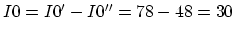

Instructions
The Problems

Solution:
Method 1 Use superposition principle to find I0 through the wires, I1 through the oven, and I2 through the battery:
, ,
(check: I1+I2=18+12=30=I0) power on oven: , power on internal resistance:
Method 2 Use Thevenin's theorem to find current through . Pull the resistor out, treat the rest as a one-port network.
Method 3 Solve the circuit by KVL. Let generator current be , current
through oven be , current through battery be , set up these equations:

Solution:
Use Thevenin's theorem (assume all , )

Solution:
phasor representation of voltage source: ,
impedances:
Find total current:
Find branch currents by current divider:
,